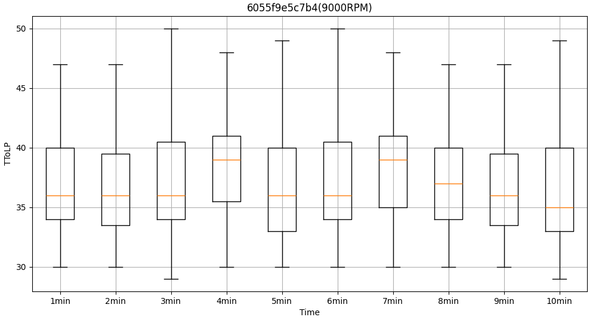
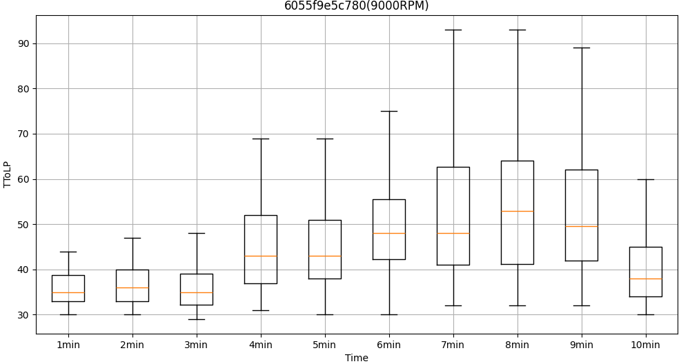
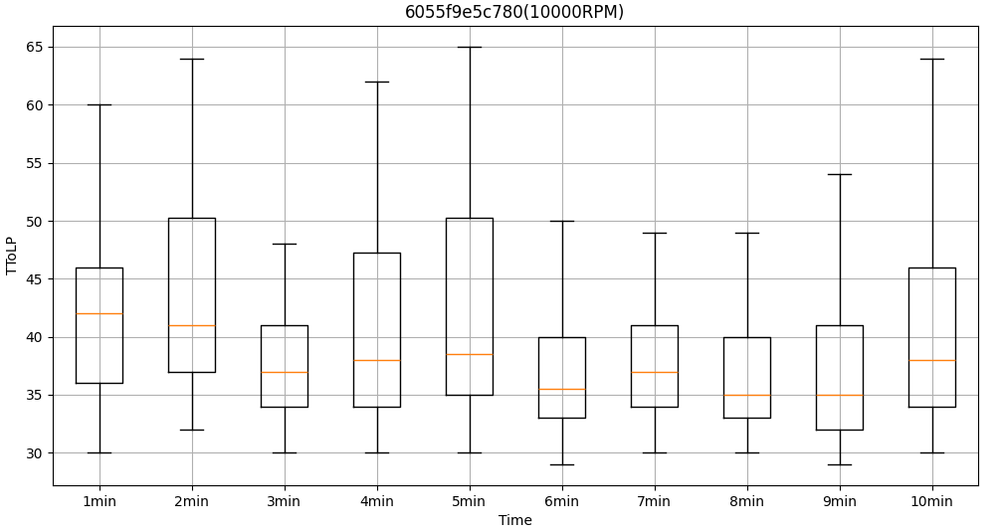
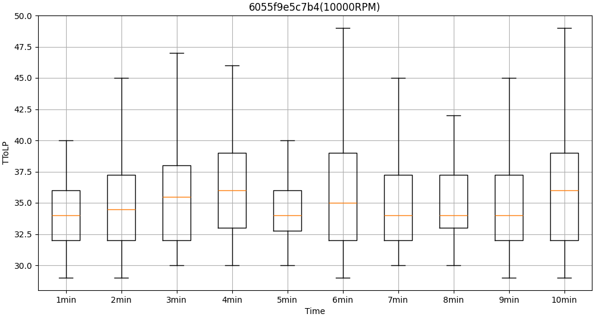
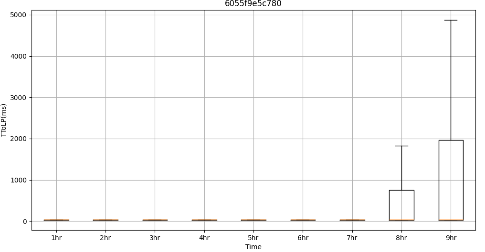
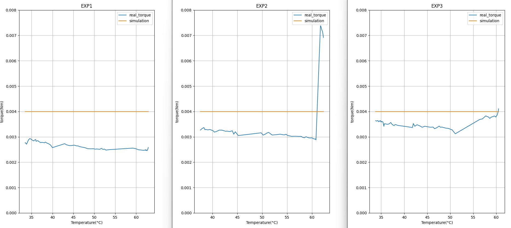
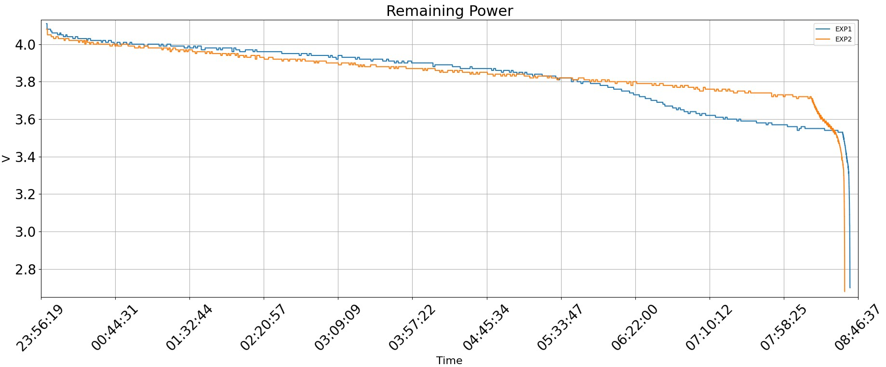
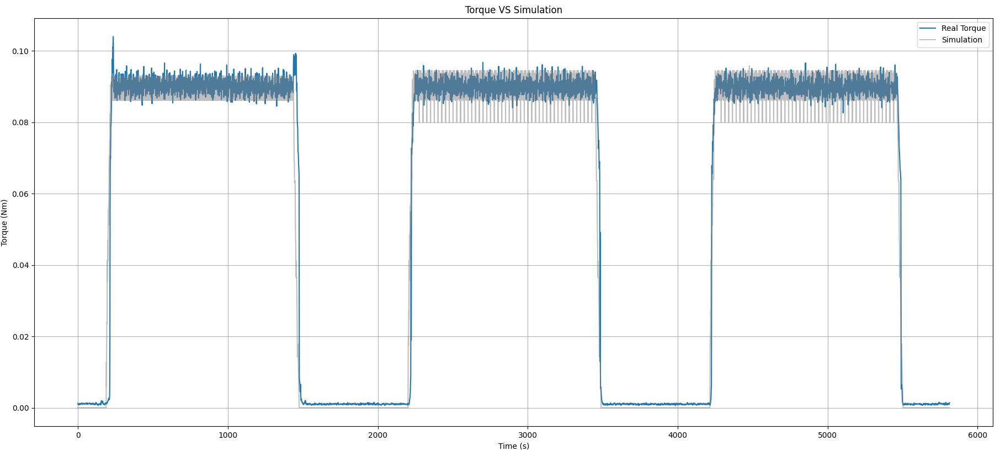
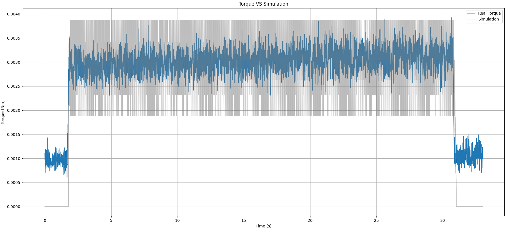
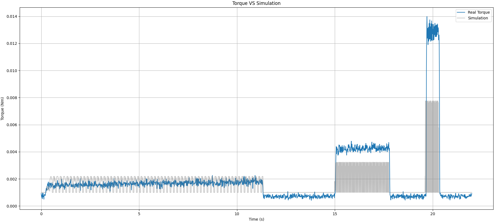

9 性能分析
性能分析包含，連線延遲、溫度影響、電量消耗、與靈敏度之分析，分述如下。
連線延遲分析
| 執行時間 | 04/22 14:37 – 04/22 17:45, 2025 | 04/22 14:37 – 04/22 17:45, 2025 | 04/22 14:37 – 04/22 17:45, 2025 | 04/22 14:37 – 04/22 17:45, 2025 | 04/22 14:37 – 04/22 17:45, 2025 | 04/22 14:37 – 04/22 17:45, 2025 |
|---|---|---|---|---|---|---|
| 執行條件 | 主軸轉速(rpm) | 進給 / (mm/min) | 持續時間 / (min/cycle) | |||
| 執行條件 | 9000, 10000 | 0 | 10 | |||
| 說明 | 智慧刀把每隔0.4秒送出累積感測量與上一次之封包傳輸時間(TTOLP)，亦即前一次連線時，傳送封包所需時間將於則下一次封包送出。因此，當連線不穩定時，則TTOLP將產生明顯變異。 | 智慧刀把每隔0.4秒送出累積感測量與上一次之封包傳輸時間(TTOLP)，亦即前一次連線時，傳送封包所需時間將於則下一次封包送出。因此，當連線不穩定時，則TTOLP將產生明顯變異。 | 智慧刀把每隔0.4秒送出累積感測量與上一次之封包傳輸時間(TTOLP)，亦即前一次連線時，傳送封包所需時間將於則下一次封包送出。因此，當連線不穩定時，則TTOLP將產生明顯變異。 | 智慧刀把每隔0.4秒送出累積感測量與上一次之封包傳輸時間(TTOLP)，亦即前一次連線時，傳送封包所需時間將於則下一次封包送出。因此，當連線不穩定時，則TTOLP將產生明顯變異。 | 智慧刀把每隔0.4秒送出累積感測量與上一次之封包傳輸時間(TTOLP)，亦即前一次連線時，傳送封包所需時間將於則下一次封包送出。因此，當連線不穩定時，則TTOLP將產生明顯變異。 | 智慧刀把每隔0.4秒送出累積感測量與上一次之封包傳輸時間(TTOLP)，亦即前一次連線時，傳送封包所需時間將於則下一次封包送出。因此，當連線不穩定時，則TTOLP將產生明顯變異。 |
| 結果 | 以不同智慧刀把，主軸轉速分別為9000與10000 RPM，通訊連線10分鐘，TTOLP平均介於30-50 ms，最大值小於90 ms。結果顯示，在轉速10000 rpm下，通訊所需時間仍穩定，並不構成通訊延遲。 | 以不同智慧刀把，主軸轉速分別為9000與10000 RPM，通訊連線10分鐘，TTOLP平均介於30-50 ms，最大值小於90 ms。結果顯示，在轉速10000 rpm下，通訊所需時間仍穩定，並不構成通訊延遲。 | 以不同智慧刀把，主軸轉速分別為9000與10000 RPM，通訊連線10分鐘，TTOLP平均介於30-50 ms，最大值小於90 ms。結果顯示，在轉速10000 rpm下，通訊所需時間仍穩定，並不構成通訊延遲。 | 以不同智慧刀把，主軸轉速分別為9000與10000 RPM，通訊連線10分鐘，TTOLP平均介於30-50 ms，最大值小於90 ms。結果顯示，在轉速10000 rpm下，通訊所需時間仍穩定，並不構成通訊延遲。 | 以不同智慧刀把，主軸轉速分別為9000與10000 RPM，通訊連線10分鐘，TTOLP平均介於30-50 ms，最大值小於90 ms。結果顯示，在轉速10000 rpm下，通訊所需時間仍穩定，並不構成通訊延遲。 | 以不同智慧刀把，主軸轉速分別為9000與10000 RPM，通訊連線10分鐘，TTOLP平均介於30-50 ms，最大值小於90 ms。結果顯示，在轉速10000 rpm下，通訊所需時間仍穩定，並不構成通訊延遲。 |




| 執行時間 | 5/11 21:27 – 5/12 06:45, 2025 | 5/11 21:27 – 5/12 06:45, 2025 | 5/11 21:27 – 5/12 06:45, 2025 | 5/11 21:27 – 5/12 06:45, 2025 | 5/11 21:27 – 5/12 06:45, 2025 | 5/11 21:27 – 5/12 06:45, 2025 |
|---|---|---|---|---|---|---|
| 執行條件 | 主軸轉速(rpm) | 最高電壓 / (V) | 最低電壓 / (V) | 持續時間 / (hr) | ||
| 執行條件 | 0 | 4.11 | 2.67 | > 7 | ||
| 說明 | 智慧刀把為使用鋰電池運作，在持續通訊操作下，因剩餘電量將逐漸降低，此分析用以檢視通訊延遲與剩餘電量與相依程度。 | 智慧刀把為使用鋰電池運作，在持續通訊操作下，因剩餘電量將逐漸降低，此分析用以檢視通訊延遲與剩餘電量與相依程度。 | 智慧刀把為使用鋰電池運作，在持續通訊操作下，因剩餘電量將逐漸降低，此分析用以檢視通訊延遲與剩餘電量與相依程度。 | 智慧刀把為使用鋰電池運作，在持續通訊操作下，因剩餘電量將逐漸降低，此分析用以檢視通訊延遲與剩餘電量與相依程度。 | 智慧刀把為使用鋰電池運作，在持續通訊操作下，因剩餘電量將逐漸降低，此分析用以檢視通訊延遲與剩餘電量與相依程度。 | 智慧刀把為使用鋰電池運作，在持續通訊操作下，因剩餘電量將逐漸降低，此分析用以檢視通訊延遲與剩餘電量與相依程度。 |
| 結果 | 連續通訊於前7小時，TTOLP均小於100ms；連續通訊時間於8-9小時，由於剩餘電量逐漸快速缺乏，TTOLP從100 ms提升至2000 ms，最大可達4.8 s。結果顯示，智慧刀把可穩定運作時間為7小時。 | 連續通訊於前7小時，TTOLP均小於100ms；連續通訊時間於8-9小時，由於剩餘電量逐漸快速缺乏，TTOLP從100 ms提升至2000 ms，最大可達4.8 s。結果顯示，智慧刀把可穩定運作時間為7小時。 | 連續通訊於前7小時，TTOLP均小於100ms；連續通訊時間於8-9小時，由於剩餘電量逐漸快速缺乏，TTOLP從100 ms提升至2000 ms，最大可達4.8 s。結果顯示，智慧刀把可穩定運作時間為7小時。 | 連續通訊於前7小時，TTOLP均小於100ms；連續通訊時間於8-9小時，由於剩餘電量逐漸快速缺乏，TTOLP從100 ms提升至2000 ms，最大可達4.8 s。結果顯示，智慧刀把可穩定運作時間為7小時。 | 連續通訊於前7小時，TTOLP均小於100ms；連續通訊時間於8-9小時，由於剩餘電量逐漸快速缺乏，TTOLP從100 ms提升至2000 ms，最大可達4.8 s。結果顯示，智慧刀把可穩定運作時間為7小時。 | 連續通訊於前7小時，TTOLP均小於100ms；連續通訊時間於8-9小時，由於剩餘電量逐漸快速缺乏，TTOLP從100 ms提升至2000 ms，最大可達4.8 s。結果顯示，智慧刀把可穩定運作時間為7小時。 |

溫度影響分析
| 執行時間 | 5/5 16:37 – 5/5 16:40,5/5 17:44, 2025 | 5/5 16:37 – 5/5 16:40,5/5 17:44, 2025 | 5/5 16:37 – 5/5 16:40,5/5 17:44, 2025 | 5/5 16:37 – 5/5 16:40,5/5 17:44, 2025 | 5/5 16:37 – 5/5 16:40,5/5 17:44, 2025 | 5/5 16:37 – 5/5 16:40,5/5 17:44, 2025 |
|---|---|---|---|---|---|---|
| 執行條件 | 主軸轉速(rpm) | 進給 / (mm/min) | 切深/切寬 / (mm) | 最高溫度 / (°C) | 最低溫度 / (°C) | 持續時間 / (min) |
| 執行條件 | 10000 | 180 | 0.5/0.1 | 60 | 25 | 2.5 |
| 刀具條件 | 刀徑 / (mm) | 刀長 / (mm) | 刃數 | 螺旋角 | ||
| 刀具條件 | 2 | 5 | 4 | |||
| 說明 | 智慧刀把為使用應變規以量測刀把加工中的變形量，當持續加工時，因主軸溫升，高溫傳遞到刀把後，刀把內部溫度亦將逐漸升高。因此，此分析則用於檢視智慧刀把感測訊號值與溫度變化的相依程度。 | 智慧刀把為使用應變規以量測刀把加工中的變形量，當持續加工時，因主軸溫升，高溫傳遞到刀把後，刀把內部溫度亦將逐漸升高。因此，此分析則用於檢視智慧刀把感測訊號值與溫度變化的相依程度。 | 智慧刀把為使用應變規以量測刀把加工中的變形量，當持續加工時，因主軸溫升，高溫傳遞到刀把後，刀把內部溫度亦將逐漸升高。因此，此分析則用於檢視智慧刀把感測訊號值與溫度變化的相依程度。 | 智慧刀把為使用應變規以量測刀把加工中的變形量，當持續加工時，因主軸溫升，高溫傳遞到刀把後，刀把內部溫度亦將逐漸升高。因此，此分析則用於檢視智慧刀把感測訊號值與溫度變化的相依程度。 | 智慧刀把為使用應變規以量測刀把加工中的變形量，當持續加工時，因主軸溫升，高溫傳遞到刀把後，刀把內部溫度亦將逐漸升高。因此，此分析則用於檢視智慧刀把感測訊號值與溫度變化的相依程度。 | 智慧刀把為使用應變規以量測刀把加工中的變形量，當持續加工時，因主軸溫升，高溫傳遞到刀把後，刀把內部溫度亦將逐漸升高。因此，此分析則用於檢視智慧刀把感測訊號值與溫度變化的相依程度。 |
| 結果 | 首先將刀把加熱至70°C，以同一刀具連續加工，如Exp1-Exp3，因刀具磨耗程度增加，致切削扭矩增加；然不同實驗顯示，在刀把內部溫度60-25°C時，從應變規所偵測的變形量相對穩定，然在60°C以上時有較高的起伏，超過60°C或許會讓訊號升高。結果顯示，當維持刀把內部60°C以下時，可獲得穩定的量測量。 | 首先將刀把加熱至70°C，以同一刀具連續加工，如Exp1-Exp3，因刀具磨耗程度增加，致切削扭矩增加；然不同實驗顯示，在刀把內部溫度60-25°C時，從應變規所偵測的變形量相對穩定，然在60°C以上時有較高的起伏，超過60°C或許會讓訊號升高。結果顯示，當維持刀把內部60°C以下時，可獲得穩定的量測量。 | 首先將刀把加熱至70°C，以同一刀具連續加工，如Exp1-Exp3，因刀具磨耗程度增加，致切削扭矩增加；然不同實驗顯示，在刀把內部溫度60-25°C時，從應變規所偵測的變形量相對穩定，然在60°C以上時有較高的起伏，超過60°C或許會讓訊號升高。結果顯示，當維持刀把內部60°C以下時，可獲得穩定的量測量。 | 首先將刀把加熱至70°C，以同一刀具連續加工，如Exp1-Exp3，因刀具磨耗程度增加，致切削扭矩增加；然不同實驗顯示，在刀把內部溫度60-25°C時，從應變規所偵測的變形量相對穩定，然在60°C以上時有較高的起伏，超過60°C或許會讓訊號升高。結果顯示，當維持刀把內部60°C以下時，可獲得穩定的量測量。 | 首先將刀把加熱至70°C，以同一刀具連續加工，如Exp1-Exp3，因刀具磨耗程度增加，致切削扭矩增加；然不同實驗顯示，在刀把內部溫度60-25°C時，從應變規所偵測的變形量相對穩定，然在60°C以上時有較高的起伏，超過60°C或許會讓訊號升高。結果顯示，當維持刀把內部60°C以下時，可獲得穩定的量測量。 | 首先將刀把加熱至70°C，以同一刀具連續加工，如Exp1-Exp3，因刀具磨耗程度增加，致切削扭矩增加；然不同實驗顯示，在刀把內部溫度60-25°C時，從應變規所偵測的變形量相對穩定，然在60°C以上時有較高的起伏，超過60°C或許會讓訊號升高。結果顯示，當維持刀把內部60°C以下時，可獲得穩定的量測量。 |

電量消耗分析
| 執行時間 | 5/11 21:27 – 5/12 06:05, 5/11 03:33 – 5/11 12:15, 2025 | 5/11 21:27 – 5/12 06:05, 5/11 03:33 – 5/11 12:15, 2025 | 5/11 21:27 – 5/12 06:05, 5/11 03:33 – 5/11 12:15, 2025 | 5/11 21:27 – 5/12 06:05, 5/11 03:33 – 5/11 12:15, 2025 | 5/11 21:27 – 5/12 06:05, 5/11 03:33 – 5/11 12:15, 2025 | 5/11 21:27 – 5/12 06:05, 5/11 03:33 – 5/11 12:15, 2025 |
|---|---|---|---|---|---|---|
| 執行條件 | 主軸轉速(rpm) | 最高電壓 / (V) | 最低電壓 / (V) | 持續時間 / (min) | ||
| 執行條件 | 0 | 4.08, / 4.11 | 2.68, / 2.67 | 510, / 525 | ||
| 說明 | 智慧刀把為使用鋰電池運作，內建低電量保護機制，以避免鋰電池過度放電，致減少電池可用壽命。本分析為進行智慧刀把連續通訊連線，用於檢測智慧刀把在內建電量保護下之最大可使用時間。 | 智慧刀把為使用鋰電池運作，內建低電量保護機制，以避免鋰電池過度放電，致減少電池可用壽命。本分析為進行智慧刀把連續通訊連線，用於檢測智慧刀把在內建電量保護下之最大可使用時間。 | 智慧刀把為使用鋰電池運作，內建低電量保護機制，以避免鋰電池過度放電，致減少電池可用壽命。本分析為進行智慧刀把連續通訊連線，用於檢測智慧刀把在內建電量保護下之最大可使用時間。 | 智慧刀把為使用鋰電池運作，內建低電量保護機制，以避免鋰電池過度放電，致減少電池可用壽命。本分析為進行智慧刀把連續通訊連線，用於檢測智慧刀把在內建電量保護下之最大可使用時間。 | 智慧刀把為使用鋰電池運作，內建低電量保護機制，以避免鋰電池過度放電，致減少電池可用壽命。本分析為進行智慧刀把連續通訊連線，用於檢測智慧刀把在內建電量保護下之最大可使用時間。 | 智慧刀把為使用鋰電池運作，內建低電量保護機制，以避免鋰電池過度放電，致減少電池可用壽命。本分析為進行智慧刀把連續通訊連線，用於檢測智慧刀把在內建電量保護下之最大可使用時間。 |
| 結果 | 檢測智慧刀把持續最長使用時間可到8小時30分鐘。結果顯示，建議智慧刀把的連續使用時間小於7小時。 | 檢測智慧刀把持續最長使用時間可到8小時30分鐘。結果顯示，建議智慧刀把的連續使用時間小於7小時。 | 檢測智慧刀把持續最長使用時間可到8小時30分鐘。結果顯示，建議智慧刀把的連續使用時間小於7小時。 | 檢測智慧刀把持續最長使用時間可到8小時30分鐘。結果顯示，建議智慧刀把的連續使用時間小於7小時。 | 檢測智慧刀把持續最長使用時間可到8小時30分鐘。結果顯示，建議智慧刀把的連續使用時間小於7小時。 | 檢測智慧刀把持續最長使用時間可到8小時30分鐘。結果顯示，建議智慧刀把的連續使用時間小於7小時。 |

靈敏度分析
| 加工/執行時間 | 4/22 18:37 – 4/22 18:38, 2025 | 4/22 18:37 – 4/22 18:38, 2025 | 4/22 18:37 – 4/22 18:38, 2025 | 4/22 18:37 – 4/22 18:38, 2025 | 4/22 18:37 – 4/22 18:38, 2025 | 4/22 18:37 – 4/22 18:38, 2025 |
|---|---|---|---|---|---|---|
| 加工條件 | 主軸轉速(rpm) | 進給 / (mm/min) | 切深 / (mm) | 切寬 / (mm) | 持續時間 / (min) | 工件材料 |
| 加工條件 | 10000 | 800 | 1 | 1 | 1 | FDAC |
| 刀具條件 | 刀徑 / (mm) | 刀長 / (mm) | 刃數 | 螺旋角 | ||
| 刀具條件 | 10 | 8 | 4 | |||
| 說明 | 智慧刀把可適用於高速精加工，以典型端銑刀進行側銑，此分析就一般精加工進行檢視。 | 智慧刀把可適用於高速精加工，以典型端銑刀進行側銑，此分析就一般精加工進行檢視。 | 智慧刀把可適用於高速精加工，以典型端銑刀進行側銑，此分析就一般精加工進行檢視。 | 智慧刀把可適用於高速精加工，以典型端銑刀進行側銑，此分析就一般精加工進行檢視。 | 智慧刀把可適用於高速精加工，以典型端銑刀進行側銑，此分析就一般精加工進行檢視。 | 智慧刀把可適用於高速精加工，以典型端銑刀進行側銑，此分析就一般精加工進行檢視。 |
| 結果 | 以智慧刀把獲得的實際扭矩與模擬扭矩相比較，在三道加工後，因刀具保持良好，維持0.090.005 Nm。結果顯示，對於一般精加工(刀徑 10 mm)，智慧刀把可提供良好的扭矩偵測。 | 以智慧刀把獲得的實際扭矩與模擬扭矩相比較，在三道加工後，因刀具保持良好，維持0.090.005 Nm。結果顯示，對於一般精加工(刀徑 10 mm)，智慧刀把可提供良好的扭矩偵測。 | 以智慧刀把獲得的實際扭矩與模擬扭矩相比較，在三道加工後，因刀具保持良好，維持0.090.005 Nm。結果顯示，對於一般精加工(刀徑 10 mm)，智慧刀把可提供良好的扭矩偵測。 | 以智慧刀把獲得的實際扭矩與模擬扭矩相比較，在三道加工後，因刀具保持良好，維持0.090.005 Nm。結果顯示，對於一般精加工(刀徑 10 mm)，智慧刀把可提供良好的扭矩偵測。 | 以智慧刀把獲得的實際扭矩與模擬扭矩相比較，在三道加工後，因刀具保持良好，維持0.090.005 Nm。結果顯示，對於一般精加工(刀徑 10 mm)，智慧刀把可提供良好的扭矩偵測。 | 以智慧刀把獲得的實際扭矩與模擬扭矩相比較，在三道加工後，因刀具保持良好，維持0.090.005 Nm。結果顯示，對於一般精加工(刀徑 10 mm)，智慧刀把可提供良好的扭矩偵測。 |

| 加工/執行時間 | 5/5 17:11 – 5/5 17:12, 2025 | 5/5 17:11 – 5/5 17:12, 2025 | 5/5 17:11 – 5/5 17:12, 2025 | 5/5 17:11 – 5/5 17:12, 2025 | 5/5 17:11 – 5/5 17:12, 2025 | 5/5 17:11 – 5/5 17:12, 2025 |
|---|---|---|---|---|---|---|
| 加工條件 | 主軸轉速(rpm) | 進給 / (mm/min) | 切深 / (mm) | 切寬 / (mm) | 持續時間 / (min) | 工件材料 |
| 加工條件 | 10000 | 180 | 0.5 | 0.1 | 1 | FDAC |
| 刀具條件 | 刀徑 / (mm) | 刀長 / (mm) | 刃數 | 螺旋角 | ||
| 刀具條件 | 2 | 15 | 4 | |||
| 說明 | 智慧刀把可適用於高速高精度加工，尤其對於小刀徑小移除量，當刀具磨耗時，其偵測扭矩的精密度為關鍵能力，此分析就小刀徑精加工進行檢視。 | 智慧刀把可適用於高速高精度加工，尤其對於小刀徑小移除量，當刀具磨耗時，其偵測扭矩的精密度為關鍵能力，此分析就小刀徑精加工進行檢視。 | 智慧刀把可適用於高速高精度加工，尤其對於小刀徑小移除量，當刀具磨耗時，其偵測扭矩的精密度為關鍵能力，此分析就小刀徑精加工進行檢視。 | 智慧刀把可適用於高速高精度加工，尤其對於小刀徑小移除量，當刀具磨耗時，其偵測扭矩的精密度為關鍵能力，此分析就小刀徑精加工進行檢視。 | 智慧刀把可適用於高速高精度加工，尤其對於小刀徑小移除量，當刀具磨耗時，其偵測扭矩的精密度為關鍵能力，此分析就小刀徑精加工進行檢視。 | 智慧刀把可適用於高速高精度加工，尤其對於小刀徑小移除量，當刀具磨耗時，其偵測扭矩的精密度為關鍵能力，此分析就小刀徑精加工進行檢視。 |
| 結果 | 以智慧刀把獲得的實際扭矩與模擬扭矩相比較，在單道加工中，因刀具逐漸磨耗，可觀察到在30 sec內實際值逐漸上升，相對上升0.001 Nm。結果顯示，智慧刀把可有效偵測小刀徑刀(2 mm)，在短時間內(30 sec)的磨耗變化。 | 以智慧刀把獲得的實際扭矩與模擬扭矩相比較，在單道加工中，因刀具逐漸磨耗，可觀察到在30 sec內實際值逐漸上升，相對上升0.001 Nm。結果顯示，智慧刀把可有效偵測小刀徑刀(2 mm)，在短時間內(30 sec)的磨耗變化。 | 以智慧刀把獲得的實際扭矩與模擬扭矩相比較，在單道加工中，因刀具逐漸磨耗，可觀察到在30 sec內實際值逐漸上升，相對上升0.001 Nm。結果顯示，智慧刀把可有效偵測小刀徑刀(2 mm)，在短時間內(30 sec)的磨耗變化。 | 以智慧刀把獲得的實際扭矩與模擬扭矩相比較，在單道加工中，因刀具逐漸磨耗，可觀察到在30 sec內實際值逐漸上升，相對上升0.001 Nm。結果顯示，智慧刀把可有效偵測小刀徑刀(2 mm)，在短時間內(30 sec)的磨耗變化。 | 以智慧刀把獲得的實際扭矩與模擬扭矩相比較，在單道加工中，因刀具逐漸磨耗，可觀察到在30 sec內實際值逐漸上升，相對上升0.001 Nm。結果顯示，智慧刀把可有效偵測小刀徑刀(2 mm)，在短時間內(30 sec)的磨耗變化。 | 以智慧刀把獲得的實際扭矩與模擬扭矩相比較，在單道加工中，因刀具逐漸磨耗，可觀察到在30 sec內實際值逐漸上升，相對上升0.001 Nm。結果顯示，智慧刀把可有效偵測小刀徑刀(2 mm)，在短時間內(30 sec)的磨耗變化。 |

| 加工/執行時間 | 4/28 16:20 – 4/28 16:42, 2025 | 4/28 16:20 – 4/28 16:42, 2025 | 4/28 16:20 – 4/28 16:42, 2025 | 4/28 16:20 – 4/28 16:42, 2025 | 4/28 16:20 – 4/28 16:42, 2025 | 4/28 16:20 – 4/28 16:42, 2025 | 4/28 16:20 – 4/28 16:42, 2025 | 4/28 16:20 – 4/28 16:42, 2025 | 4/28 16:20 – 4/28 16:42, 2025 | 4/28 16:20 – 4/28 16:42, 2025 | 4/28 16:20 – 4/28 16:42, 2025 |
|---|---|---|---|---|---|---|---|---|---|---|---|
| 加工條件 | 主軸轉速(rpm) | 進給 / (mm/min) | 進給 / (mm/min) | 進給 / (mm/min) | 切深 / (mm) | 切深 / (mm) | 切寬 / (mm) | 切寬 / (mm) | 持續時間 / (min) | 持續時間 / (min) | 工件材料 |
| 加工條件 | 10000 | 100, 400, 1600 | 100, 400, 1600 | 100, 400, 1600 | 0.015 | 0.015 | 0.5 | 0.5 | 22 | 22 | FDAC |
| 刀具條件 | 刀徑 / (mm) | 刀徑 / (mm) | 刀長 / (mm) | 刃數 | 刃數 | 螺旋角 | 螺旋角 | ||||
| 刀具條件 | 0.5 | 0.5 | 8 | 2 | 2 | ||||||
| 說明 | 智慧刀把可適用於高速高精度加工，尤其以小刀徑進行小量移除且刀具逐漸磨耗時，智慧刀把對於偵測扭矩之精密度為關鍵。此分析為就超小刀徑，不同進給之精加工進行檢視。 | 智慧刀把可適用於高速高精度加工，尤其以小刀徑進行小量移除且刀具逐漸磨耗時，智慧刀把對於偵測扭矩之精密度為關鍵。此分析為就超小刀徑，不同進給之精加工進行檢視。 | 智慧刀把可適用於高速高精度加工，尤其以小刀徑進行小量移除且刀具逐漸磨耗時，智慧刀把對於偵測扭矩之精密度為關鍵。此分析為就超小刀徑，不同進給之精加工進行檢視。 | 智慧刀把可適用於高速高精度加工，尤其以小刀徑進行小量移除且刀具逐漸磨耗時，智慧刀把對於偵測扭矩之精密度為關鍵。此分析為就超小刀徑，不同進給之精加工進行檢視。 | 智慧刀把可適用於高速高精度加工，尤其以小刀徑進行小量移除且刀具逐漸磨耗時，智慧刀把對於偵測扭矩之精密度為關鍵。此分析為就超小刀徑，不同進給之精加工進行檢視。 | 智慧刀把可適用於高速高精度加工，尤其以小刀徑進行小量移除且刀具逐漸磨耗時，智慧刀把對於偵測扭矩之精密度為關鍵。此分析為就超小刀徑，不同進給之精加工進行檢視。 | 智慧刀把可適用於高速高精度加工，尤其以小刀徑進行小量移除且刀具逐漸磨耗時，智慧刀把對於偵測扭矩之精密度為關鍵。此分析為就超小刀徑，不同進給之精加工進行檢視。 | 智慧刀把可適用於高速高精度加工，尤其以小刀徑進行小量移除且刀具逐漸磨耗時，智慧刀把對於偵測扭矩之精密度為關鍵。此分析為就超小刀徑，不同進給之精加工進行檢視。 | 智慧刀把可適用於高速高精度加工，尤其以小刀徑進行小量移除且刀具逐漸磨耗時，智慧刀把對於偵測扭矩之精密度為關鍵。此分析為就超小刀徑，不同進給之精加工進行檢視。 | 智慧刀把可適用於高速高精度加工，尤其以小刀徑進行小量移除且刀具逐漸磨耗時，智慧刀把對於偵測扭矩之精密度為關鍵。此分析為就超小刀徑，不同進給之精加工進行檢視。 | 智慧刀把可適用於高速高精度加工，尤其以小刀徑進行小量移除且刀具逐漸磨耗時，智慧刀把對於偵測扭矩之精密度為關鍵。此分析為就超小刀徑，不同進給之精加工進行檢視。 |
| 結果 | 以刀徑0.5 mm，進給逐漸增加，因刀具逐漸磨耗，可觀察到實際值相對模擬值，第一段增加0.001 Nm，第二段增加0.002 Nm，而第三段增加0.008 Nm。結果顯示，智慧刀把可有效偵測超小刀徑磨耗的變化。 | 以刀徑0.5 mm，進給逐漸增加，因刀具逐漸磨耗，可觀察到實際值相對模擬值，第一段增加0.001 Nm，第二段增加0.002 Nm，而第三段增加0.008 Nm。結果顯示，智慧刀把可有效偵測超小刀徑磨耗的變化。 | 以刀徑0.5 mm，進給逐漸增加，因刀具逐漸磨耗，可觀察到實際值相對模擬值，第一段增加0.001 Nm，第二段增加0.002 Nm，而第三段增加0.008 Nm。結果顯示，智慧刀把可有效偵測超小刀徑磨耗的變化。 | 以刀徑0.5 mm，進給逐漸增加，因刀具逐漸磨耗，可觀察到實際值相對模擬值，第一段增加0.001 Nm，第二段增加0.002 Nm，而第三段增加0.008 Nm。結果顯示，智慧刀把可有效偵測超小刀徑磨耗的變化。 | 以刀徑0.5 mm，進給逐漸增加，因刀具逐漸磨耗，可觀察到實際值相對模擬值，第一段增加0.001 Nm，第二段增加0.002 Nm，而第三段增加0.008 Nm。結果顯示，智慧刀把可有效偵測超小刀徑磨耗的變化。 | 以刀徑0.5 mm，進給逐漸增加，因刀具逐漸磨耗，可觀察到實際值相對模擬值，第一段增加0.001 Nm，第二段增加0.002 Nm，而第三段增加0.008 Nm。結果顯示，智慧刀把可有效偵測超小刀徑磨耗的變化。 | 以刀徑0.5 mm，進給逐漸增加，因刀具逐漸磨耗，可觀察到實際值相對模擬值，第一段增加0.001 Nm，第二段增加0.002 Nm，而第三段增加0.008 Nm。結果顯示，智慧刀把可有效偵測超小刀徑磨耗的變化。 | 以刀徑0.5 mm，進給逐漸增加，因刀具逐漸磨耗，可觀察到實際值相對模擬值，第一段增加0.001 Nm，第二段增加0.002 Nm，而第三段增加0.008 Nm。結果顯示，智慧刀把可有效偵測超小刀徑磨耗的變化。 | 以刀徑0.5 mm，進給逐漸增加，因刀具逐漸磨耗，可觀察到實際值相對模擬值，第一段增加0.001 Nm，第二段增加0.002 Nm，而第三段增加0.008 Nm。結果顯示，智慧刀把可有效偵測超小刀徑磨耗的變化。 | 以刀徑0.5 mm，進給逐漸增加，因刀具逐漸磨耗，可觀察到實際值相對模擬值，第一段增加0.001 Nm，第二段增加0.002 Nm，而第三段增加0.008 Nm。結果顯示，智慧刀把可有效偵測超小刀徑磨耗的變化。 | 以刀徑0.5 mm，進給逐漸增加，因刀具逐漸磨耗，可觀察到實際值相對模擬值，第一段增加0.001 Nm，第二段增加0.002 Nm，而第三段增加0.008 Nm。結果顯示，智慧刀把可有效偵測超小刀徑磨耗的變化。 |
